Chỉnh ảnh AI
Hướng dẫn cài đặt và chỉnh sửa ảnh · phiên bản 1.0.0
Chỉnh ảnh AI chỉnh ảnh như thợ hậu kỳ chỉ với một cú nhấp. Mở ảnh là phần mềm tự phân tích rồi chỉnh ngay: phơi sáng, cân bằng trắng, cứu vùng cháy sáng, mở vùng tối, khử sương mù, giảm nhiễu, làm nét, làm mịn da chân dung. Bấm Lưu ảnh là xong. Ảnh gốc không bao giờ bị ghi đè. Phần mềm chạy trên máy, không cần mạng.
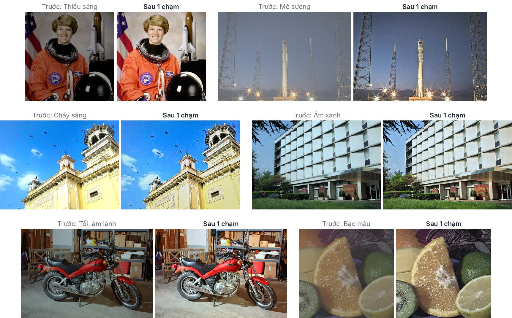
1Chuẩn bị
- Máy tính Windows 10 hoặc Windows 11. Phần mềm dùng .NET Framework 4.8 — có sẵn trong Windows 11 và Windows 10 bản 1903 trở lên. Bộ cài tự kiểm tra; nếu thiếu sẽ chỉ đường tới trang tải của Microsoft.
- Bộ nhớ: 4 GB RAM là dùng được; ảnh rất lớn (24 megapixel trở lên) nên có 8 GB.
- Không cần Internet, trừ khi bật AI Claude (mục 10).
- Tệp cài đặt (chọn một):
- ChinhAnhAI-1.0.0-CaiDat.exe — bộ cài, khuyên dùng.
- ChinhAnhAI-1.0.0-DiDong.zip — bản chạy ngay không cần cài (để trong USB, máy công ty…).
2Cài đặt
Cách 1 — Bộ cài (khuyên dùng)
- Nhấp đúp tệp ChinhAnhAI-1.0.0-CaiDat.exe.
- Nếu Windows hiện màn hình xanh “Windows protected your PC” (SmartScreen): bấm More info rồi Run anyway. Thông báo này xuất hiện vì phần mềm chưa có chữ ký số, không phải vì có lỗi.
- Trang chào: bấm Tiến >.
- Chọn thành phần: nên để nguyên cả ba ô — lối tắt trên màn hình, mục Chỉnh bằng Chỉnh ảnh AI trong menu chuột phải, và Gửi tới (để chỉnh nhiều ảnh một lúc). Bấm Tiến >.
- Thư mục cài: để mặc định C:\Users\<tên bạn>\AppData\Local\Programs\ChinhAnhAI. Phần mềm cài cho tài khoản Windows của bạn nên không cần quyền quản trị (Administrator). Bấm Cài đặt.
- Bấm Hoàn thành. Để tick Mở Chỉnh ảnh AI ngay thì phần mềm mở luôn.
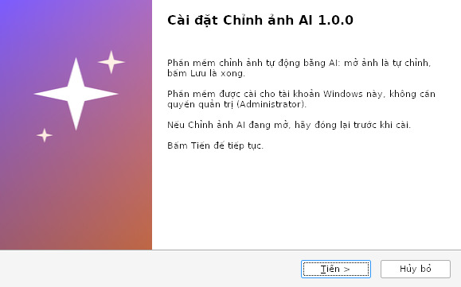
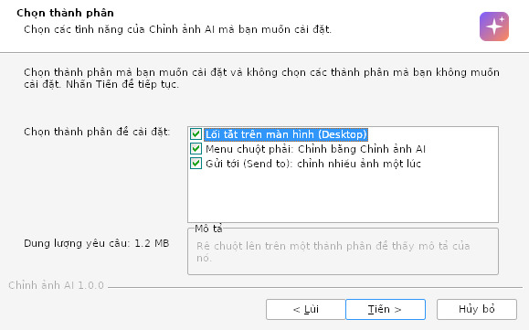
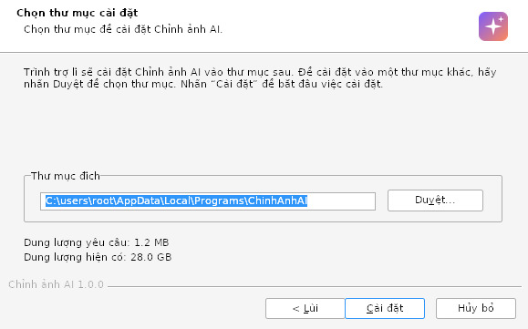
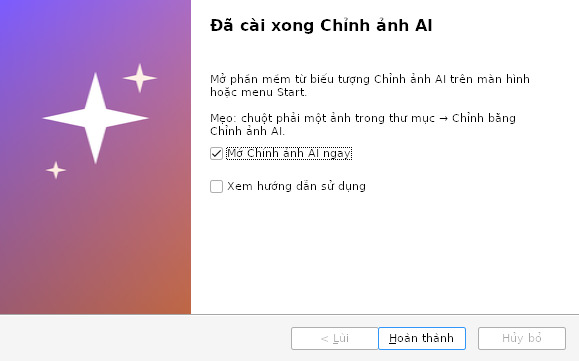
Cài xong, máy có:
- Biểu tượng Chỉnh ảnh AI trên màn hình và trong menu Start (thư mục Chỉnh ảnh AI có thêm Hướng dẫn sử dụng và Gỡ Chỉnh ảnh AI).
- Chuột phải một ảnh trong thư mục → Chỉnh bằng Chỉnh ảnh AI.
- Chọn nhiều ảnh → chuột phải → Gửi tới (Send to) → Chỉnh ảnh AI.
- Chuột phải ảnh → Mở bằng (Open with) → Chọn ứng dụng khác → Chỉnh ảnh AI.
Cập nhật phiên bản mới: đóng Chỉnh ảnh AI, chạy bộ cài mới — cài đè lên bản cũ. Cài đặt và API key được giữ nguyên.
Cách 2 — Bản di động (không cài)
- Chuột phải tệp ChinhAnhAI-1.0.0-DiDong.zip → Extract All… (Giải nén tất cả) vào thư mục bất kỳ, vd D:\ChinhAnhAI.
- Nhấp đúp ChinhAnhAI.exe (SmartScreen: More info → Run anyway).
- Muốn có lối tắt: trong phần mềm vào Cài đặt → Lối tắt trên màn hình và Thêm vào menu chuột phải “Gửi tới”.
Bản di động không thêm mục Chỉnh bằng Chỉnh ảnh AI vào menu chuột phải; mọi chức năng khác giống bản cài.
3Chỉnh ảnh trong 3 bước
- Mở ảnh: bấm Mở ảnh (Ctrl+O), kéo thả ảnh vào cửa sổ, hoặc chuột phải ảnh → Chỉnh bằng Chỉnh ảnh AI.
- Chờ vài giây: phần mềm tự phân tích và chỉnh ngay (vạch tím – cam chạy ở mép trên là đang xử lý). Thanh trạng thái dưới cùng cho biết phần mềm nhận ra gì, vd “Chân dung · hơi tối (+1.2 EV) · nhiễu thấp · 1 khuôn mặt”.
- Lưu: bấm Lưu ảnh (Ctrl+S). Ảnh mới nằm cạnh ảnh gốc, tên thêm _AI (vd IMG_0412_AI.jpg). Bấm Mở thư mục ở góc dưới bên phải để xem.
4Làm quen giao diện
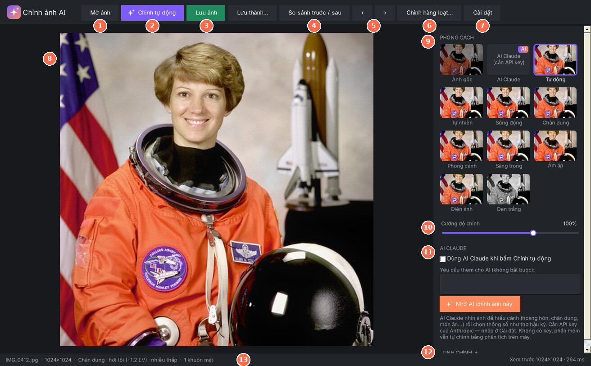
| Phần | Dùng để | |
|---|---|---|
| 1 | Mở ảnh | Chọn một hoặc nhiều ảnh (chọn nhiều thì phần mềm hỏi có chỉnh hàng loạt không). |
| 2 | Chỉnh tự động | Chỉnh lại theo phong cách bạn chọn gần nhất (ban đầu là Tự động), cường độ 100%, bỏ các chỉnh tay. Nếu đã bật AI Claude thì nhờ AI chỉnh. Phím A. |
| 3 | Lưu ảnh / Lưu thành… | Lưu ngay với tên _AI; Lưu thành… để tự chọn tên, nơi lưu, định dạng. |
| 4 | So sánh trước / sau | Chia đôi ảnh: bên trái ảnh gốc, bên phải ảnh đã chỉnh. Phím C. |
| 5 | ‹ › | Mở ảnh trước / sau trong cùng thư mục — chỉnh lần lượt cả thư mục rất nhanh. Phím ← →. |
| 6 | Chỉnh hàng loạt… | Chỉnh nhiều ảnh một lúc (mục 11). Ctrl+B. |
| 7 | Cài đặt | API key AI Claude, nơi lưu, tên tệp, chất lượng, cỡ ảnh lưu, lối tắt. |
| 8 | Khung ảnh | Nhấn giữ chuột để xem ảnh gốc. Kéo thả ảnh vào đây để mở. |
| 9 | Phong cách | Mỗi ô là chính ảnh của bạn theo một kiểu — bấm để chọn (mục 7). |
| 10 | Cường độ chỉnh | 0% = ảnh gốc, 100% = mức phần mềm chọn, tới 150% = đậm hơn. |
| 11 | AI Claude | Bật / tắt AI, ô ghi yêu cầu bằng lời, nút Nhờ AI chỉnh ảnh này (mục 10). |
| 12 | Tinh chỉnh + | Mở 21 thanh chỉnh chi tiết như Lightroom (mục 8). |
| 13 | Thanh trạng thái | Tên và cỡ ảnh, cảnh phần mềm nhận ra; lưu xong hiện đường dẫn và nút Mở thư mục. |
5Các cách mở ảnh
- Nút Mở ảnh hoặc Ctrl+O.
- Kéo thả ảnh (hoặc cả thư mục) từ File Explorer vào cửa sổ.
- Chuột phải ảnh → Chỉnh bằng Chỉnh ảnh AI (bản cài), hoặc Mở bằng → Chọn ứng dụng khác → Chỉnh ảnh AI.
- Chọn nhiều ảnh → chuột phải → Gửi tới → Chỉnh ảnh AI: phần mềm hỏi chỉnh hàng loạt tất cả hay chỉ mở ảnh đầu tiên.
- Đang mở một ảnh: ‹ › hoặc ← → sang ảnh khác cùng thư mục.
Định dạng mở được: JPG, PNG, BMP, TIFF, GIF. Ảnh chụp dọc bằng điện thoại tự xoay đúng chiều. Chưa mở được ảnh RAW (.CR2, .NEF, .ARW…) và HEIC của iPhone — xem mục 14.
6So sánh trước / sau
- Nhấn giữ chuột trên ảnh (hoặc giữ phím Space) để xem ảnh gốc; thả ra để xem ảnh đã chỉnh.
- So sánh trước / sau (phím C): một vạch chia đôi ảnh — bên trái TRƯỚC, bên phải SAU. Kéo chuột trên ảnh để dời vạch. Bấm lại nút để tắt.
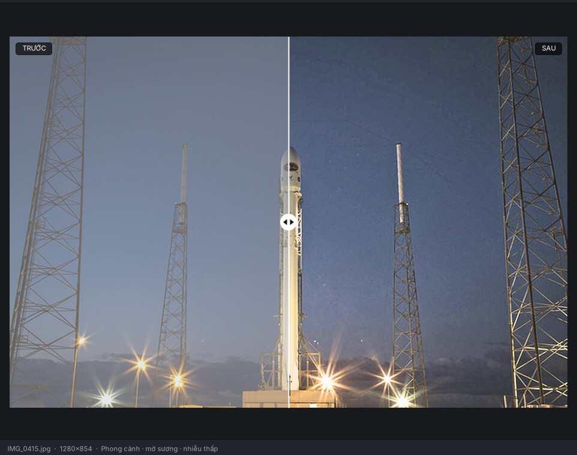
7Phong cách và cường độ
Các ô phong cách bên phải hiện sẵn ảnh của bạn theo từng kiểu. Bấm một ô để chọn; ô đang chọn có viền tím.
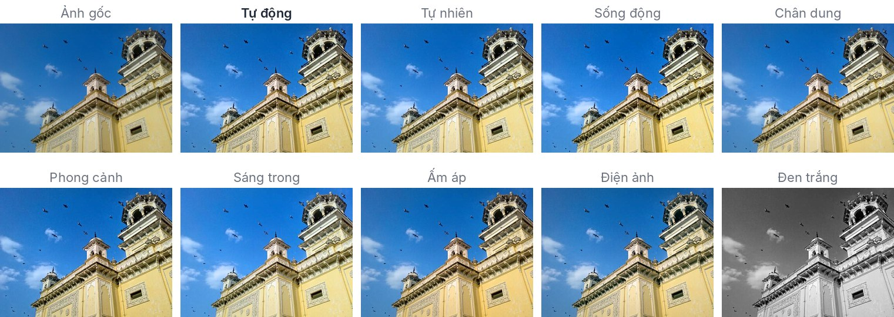
| Phong cách | Hợp với |
|---|---|
| Tự động (mặc định) | Mọi ảnh. Phần mềm tự chọn theo cảnh: có khuôn mặt → kiểu Chân dung; trời, cây cỏ → kiểu Phong cảnh; còn lại → chỉnh tự nhiên, tươi hơn một chút. |
| Tự nhiên | Chỉ sửa lỗi kỹ thuật (sáng, màu, cháy, nhiễu), không thêm “gu”. Ảnh tài liệu, sản phẩm, ảnh cần trung thực. |
| Sống động | Màu tươi, rõ nét: ảnh du lịch, sự kiện, đăng mạng xã hội. |
| Chân dung | Da mịn tự nhiên, tông ấm, nền dịu, viền tối nhẹ hướng mắt vào người. |
| Phong cảnh | Trời xanh trong, cây tươi, khử sương mù, chi tiết rõ. |
| Sáng trong | Sáng, nhẹ, trong trẻo (kiểu ảnh Hàn Quốc): cà phê, thời trang, ảnh đời thường. |
| Ấm áp | Nắng vàng, hoài niệm: hoàng hôn, gia đình, kỷ niệm. |
| Điện ảnh | Vùng tối xanh ngọc, vùng sáng cam, tương phản kiểu phim: đường phố, ảnh nghệ thuật. |
| Đen trắng | Đen trắng tương phản, cổ điển: chân dung, kiến trúc. |
| Ảnh gốc | Bỏ mọi chỉnh sửa (để so sánh hoặc làm lại từ đầu). |
| AI Claude | Thông số do AI chọn sau khi xem ảnh (mục 10). |
Cường độ chỉnh nhân mọi chỉnh sửa của phong cách: 0% là ảnh gốc, 100% là mức phần mềm chọn, tối đa 150%. Nhấp đúp thanh để về 100%. Phong cách và cường độ vừa chọn được nhớ cho những ảnh mở sau.
8Tinh chỉnh từng thanh
Bấm TINH CHỈNH + ở cột phải để mở 21 thanh. Các thanh hiện sẵn giá trị phần mềm (hoặc AI) đã chọn — bạn chỉ cần kéo thêm chỗ chưa ưng.
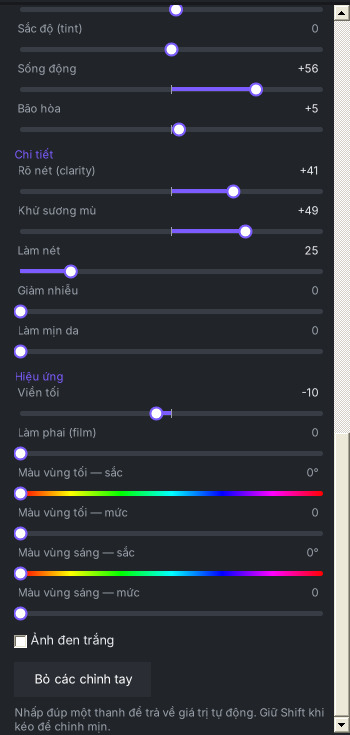
- Kéo thanh để chỉnh; ảnh cập nhật ngay.
- Nhấp đúp một thanh để trả về giá trị tự động.
- Giữ Shift khi kéo để chỉnh mịn; hoặc bấm vào thanh rồi dùng ← → (giữ Shift: bước ×10).
- Bỏ các chỉnh tay xoá mọi thanh bạn đã kéo, giữ phong cách.
- Đổi cường độ thì giữ phần chỉnh tay; đổi phong cách thì phần chỉnh tay bị bỏ — chọn phong cách trước, tinh chỉnh sau.
| Thanh | Tác dụng | Dùng khi |
|---|---|---|
| Ánh sáng | ||
| Phơi sáng | Sáng / tối toàn ảnh, đơn vị EV (+1 = sáng gấp đôi). | Ảnh tối hoặc quá sáng. |
| Tương phản | Khác biệt giữa vùng sáng và tối. | Ảnh “nhạt” (+), ảnh gắt (−). |
| Vùng sáng | Chỉ các vùng sáng; kéo âm để lấy lại chi tiết. | Trời trắng bệch, áo trắng cháy. |
| Vùng tối | Chỉ các vùng tối; kéo dương để thấy rõ chỗ tối. | Ngược sáng, mặt người bị tối. |
| Điểm trắng | Độ sáng của chỗ sáng nhất. | Nền trắng bị xám (+). |
| Điểm đen | Độ đậm của chỗ tối nhất; kéo âm cho đen sâu. | Ảnh bạc, mờ (−). |
| Màu sắc | ||
| Nhiệt độ màu | + ấm (vàng), − lạnh (xanh). | Đèn vàng trong nhà (−), bóng râm xanh (+). |
| Sắc độ (tint) | + hồng tím, − xanh lá. | Ảnh ám xanh lá do đèn huỳnh quang (+). |
| Sống động | Tăng màu nhạt nhiều, màu đã đậm ít, giữ màu da. | Muốn màu tươi mà da vẫn tự nhiên. |
| Bão hòa | Tăng / giảm đều mọi màu. | Giảm màu kiểu phim (−). Tránh kéo quá +20. |
| Chi tiết | ||
| Rõ nét (clarity) | Tương phản chi tiết, kết cấu; âm để mềm ảnh. | Phong cảnh, kiến trúc (+); da mặt (0 hoặc −). |
| Khử sương mù | Xoá lớp sương, khói, kính mờ; âm để thêm sương. | Ảnh xa, trời mù, chụp qua kính. |
| Làm nét | Làm sắc cạnh, có ngưỡng để không làm nổi nhiễu. | Ảnh hơi mềm; 30–50 là thường dùng. |
| Giảm nhiễu | Làm sạch hạt sạn (độ sáng và màu). | Ảnh đêm, ảnh tối được kéo sáng. |
| Làm mịn da | Mịn da, giữ mắt, môi, tóc; chỉ áp quanh khuôn mặt tìm được. | Chân dung; 15–35 là tự nhiên. |
| Hiệu ứng | ||
| Viền tối | Âm: tối bốn góc, hướng mắt vào giữa; dương: sáng góc. | Chân dung, ảnh nghệ thuật (−10 … −25). |
| Làm phai (film) | Nâng điểm đen, màu đen bạc kiểu phim. | Ảnh hoài niệm. |
| Màu vùng tối — sắc / mức | Tô một màu vào vùng tối (sắc độ 0–360°). | Kiểu điện ảnh: xanh ngọc ~190°. |
| Màu vùng sáng — sắc / mức | Tô một màu vào vùng sáng. | Nắng ấm: cam ~35–45°. |
| Ảnh đen trắng | Chuyển đen trắng (ô tick dưới các thanh). | Dùng kèm Tương phản, Rõ nét. |
9Lưu ảnh
- Lưu ảnh (Ctrl+S): lưu ngay cạnh ảnh gốc, tên thêm _AI. Nếu tên đã có, phần mềm thêm số (2), (3)… — không ghi đè ảnh đã lưu. Phần mềm không bao giờ ghi đè ảnh gốc, kể cả khi dùng Lưu thành….
- Lưu thành… (Ctrl+Shift+S): tự chọn tên, thư mục và định dạng (JPEG, PNG, TIFF).
- Ảnh JPEG lưu ra giữ thông tin EXIF của ảnh gốc: máy chụp, ngày giờ, vị trí GPS. Ảnh xuất ở cỡ thật của ảnh gốc (ảnh 24 megapixel mất vài giây).
- Đổi cách lưu trong Cài đặt → Lưu ảnh: thư mục lưu riêng, chữ thêm vào tên tệp, chất lượng JPEG (mặc định 95), và cỡ ảnh lưu — chọn Cạnh dài 2048 điểm cho ảnh đăng Facebook, Zalo: nhẹ, tải nhanh mà vẫn nét.
10AI Claude (không bắt buộc)
Không có AI, phần mềm vẫn tự chỉnh bằng phân tích ảnh trên máy: đo độ sáng, tìm điểm trung tính để cân màu, đo nhiễu, nhận diện khuôn mặt (để đo sáng theo mặt như thợ ảnh), nhận diện trời, cây cỏ, sương mù, ngược sáng, cảnh đêm.
Bật AI Claude thì AI của Anthropic xem ảnh và chọn thông số như một thợ hậu kỳ: phân biệt được hoàng hôn với ảnh ám màu, cảnh đêm có chủ ý với ảnh thiếu sáng, biết món ăn, sản phẩm, chân dung… và làm theo yêu cầu bằng lời của bạn.
Bật AI Claude
- Tạo API key tại console.anthropic.com/settings/keys (cần đăng ký và nạp tiền vào tài khoản Anthropic).
- Trong phần mềm: Cài đặt → dán key vào ô API key → bấm Kiểm tra key (không tốn phí) — thấy “Key dùng được…” là được.
- Tick Dùng AI Claude khi bấm Chỉnh tự động và khi mở ảnh → Lưu cài đặt.
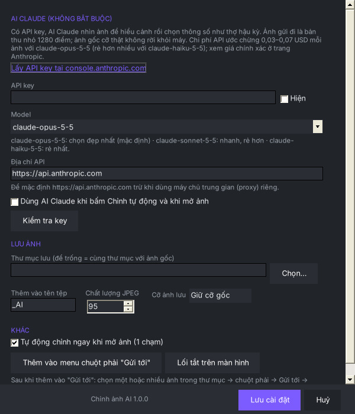
Dùng AI
- Mở ảnh hoặc bấm Chỉnh tự động: AI chỉnh, thường mất 10–30 giây. Trong lúc chờ bạn đã thấy bản chỉnh trên máy.
- Bất cứ lúc nào: bấm Nhờ AI chỉnh ảnh này hoặc ô AI Claude trong lưới phong cách.
- AI làm trên nền phong cách đang chọn. Dòng chữ dưới nút cho biết AI thấy gì và đã chỉnh gì.
- Ô Yêu cầu thêm cho AI nhận mong muốn bằng lời, ví dụ: “tông ấm kiểu phim, da sáng hồng”, “giữ không khí u buồn của trời mưa”, “nền trắng tinh cho ảnh sản phẩm”.
- Kết quả AI vẫn tinh chỉnh tay được như mọi phong cách khác.
Nếu AI lỗi (mất mạng, key sai, hết hạn mức…), phần mềm giữ nguyên bản chỉnh trên máy và báo lỗi màu đỏ ở khung AI.
11Chỉnh hàng loạt
Bấm Chỉnh hàng loạt… (Ctrl+B), hoặc chọn nhiều ảnh trong thư mục → chuột phải → Gửi tới → Chỉnh ảnh AI.
- Thêm ảnh: Thêm ảnh…, Thêm thư mục… (lấy cả thư mục con) hoặc kéo thả vào danh sách. Chọn dòng rồi bấm Delete để bỏ bớt.
- Chọn phong cách, cường độ, và có nhờ AI chỉnh từng ảnh hay không.
- Lưu vào: để trống thì mỗi ảnh lưu vào thư mục con Da chinh AI ngay cạnh nó; hoặc chọn một thư mục chung.
- Bấm Bắt đầu chỉnh. Cột Trạng thái báo từng ảnh; xong bấm Mở thư mục kết quả. Bấm Dừng để dừng giữa chừng.
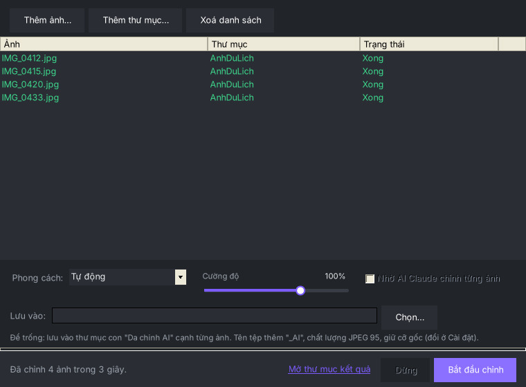
Mỗi ảnh được phân tích và chỉnh riêng — ảnh tối được kéo sáng, ảnh ám màu được cân màu — chứ không áp một bộ thông số cho tất cả.
12Mẹo chỉnh theo loại ảnh
Bắt đầu từ phong cách gợi ý, xem kết quả, rồi chỉ kéo thêm các thanh dưới đây nếu cần.
Chân dung
Phong cách Chân dung. Da mịn quá: Làm mịn da 15–25. Mặt còn tối: Vùng tối +20. Tránh Rõ nét dương cao.
Ngược sáng
Mặt tối, nền trời sáng: Vùng tối +30 … +50, Vùng sáng −30 … −60. Nếu thấy “giả”, giảm Rõ nét.
Phong cảnh, du lịch
Phong cảnh hoặc Sống động. Trời nhạt: Vùng sáng −30, Khử sương mù +10 … +20.
Trong nhà đèn vàng
Nhiệt độ màu −10 … −25 cho bớt vàng, nên còn chút ấm cho tự nhiên.
Ảnh đêm
Tự động giữ đêm vẫn là đêm. Ảnh sạn: Giảm nhiễu 40–60. Đừng kéo Phơi sáng quá +1.
Món ăn
Sống động hoặc Ấm áp; Nhiệt độ màu +5 … +10, Rõ nét +10 cho món ăn “ngon mắt”.
Sản phẩm, tài liệu nền trắng
Tự nhiên; Điểm trắng +20 … +40 cho nền trắng tinh; chỉnh Nhiệt độ, Sắc độ tới khi nền hết ám màu.
Ảnh cũ, bạc màu, ảnh scan
Tự động; Điểm đen −30 … −60 cho đậm lại, Sống động +20.
13Phím tắt
| Phím | Việc |
|---|---|
| Ctrl+O | Mở ảnh |
| Ctrl+S | Lưu ảnh (tên _AI, cạnh ảnh gốc) |
| Ctrl+Shift+S | Lưu thành… |
| Ctrl+B | Chỉnh hàng loạt |
| A | Chỉnh tự động |
| C | Bật / tắt so sánh trước / sau |
| Giữ Space hoặc nhấn giữ chuột trên ảnh | Xem ảnh gốc |
| ← → | Ảnh trước / sau trong thư mục (khi không chọn thanh chỉnh nào) |
| Nhấp đúp thanh chỉnh | Trả thanh về giá trị tự động |
14Câu hỏi thường gặp
Windows báo “Windows protected your PC” khi mở bộ cài?
Phần mềm chưa có chữ ký số nên SmartScreen cảnh báo. Bấm More info → Run anyway.
Không thấy “Chỉnh bằng Chỉnh ảnh AI” khi chuột phải?
Trên Windows 11 bấm Hiện thêm tùy chọn hoặc giữ Shift khi chuột phải. Mục này chỉ có ở bản cài và chỉ hiện khi chọn một ảnh; chọn nhiều ảnh thì dùng Gửi tới.
Ảnh chỉnh xong đậm quá / chưa hợp ý?
Kéo Cường độ chỉnh xuống 60–80%, hoặc chọn phong cách Tự nhiên. Muốn làm lại từ đầu: bấm ô Ảnh gốc rồi chọn lại phong cách.
Mở ảnh iPhone (.HEIC) không được?
Phiên bản này chưa đọc HEIC và RAW. Trên iPhone: Cài đặt → Camera → Định dạng → Tương thích nhất để từ nay chụp JPEG; ảnh đã chụp thì chuyển sang JPEG trước bằng ứng dụng bạn quen dùng.
Ảnh gốc có bị thay đổi không?
Không. Phần mềm chỉ đọc ảnh gốc và luôn lưu ra tệp mới.
Ảnh đã lưu nằm ở đâu?
Cùng thư mục với ảnh gốc, tên thêm _AI (chỉnh hàng loạt: thư mục con Da chinh AI), trừ khi bạn đổi trong Cài đặt. Sau khi lưu, bấm Mở thư mục ở góc dưới.
Máy chậm với ảnh lớn?
Khi kéo thanh, phần mềm chỉ dựng bản xem trước nên vẫn nhanh; lúc lưu mới xử lý ảnh cỡ thật (vài giây với ảnh 24 megapixel). Chọn Cỡ ảnh lưu nhỏ hơn trong Cài đặt nếu không cần ảnh cỡ gốc.
AI báo lỗi?
API key không đúng: kiểm tra lại key (nút Kiểm tra key). Vượt giới hạn / quá tải: đợi vài phút. Không kết nối được: kiểm tra Internet. Trong mọi trường hợp bạn vẫn dùng được bản chỉnh trên máy.
Bộ cài báo thiếu .NET Framework?
Bấm Yes để mở trang tải .NET Framework 4.8 của Microsoft, cài xong chạy lại bộ cài. (Hiếm gặp: Windows 10 bản 1903 trở lên và Windows 11 đều có sẵn.)
15Gỡ cài đặt
- Settings → Apps → Installed apps (Cài đặt → Ứng dụng) → Chỉnh ảnh AI → Uninstall; hoặc menu Start → Chỉnh ảnh AI → Gỡ Chỉnh ảnh AI.
- Bộ gỡ xoá phần mềm, lối tắt và các mục menu chuột phải, rồi hỏi có xoá luôn cài đặt (API key, thư mục lưu…) không. Ảnh bạn đã chỉnh không bị xoá.
- Bản di động: chỉ cần xoá thư mục đã giải nén (và lối tắt nếu đã tạo).